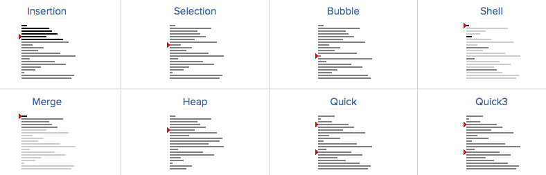

2016/10/16
Author: guoqzuo
c语言排序算法
排序的方法有不少，不过到现在还没怎么具体应用过，可能还比较low吧。这里介绍4中常见的排序算法：冒泡排序、选择排序、插入排序、快速排序，用C语言实现。

直接上代码:
/*
* 排序
* Sun Oct 16 15:54:56 2016
* Create by Kevin Zuo
*/
#include <stdio.h>
#include <stdlib.h>
void swap(int* a, int* b) // 交换值
{
int t = *a;
*a = *b;
*b = t;
}
void sort_mp(int *a, int n) // 冒泡排序
{
for (int i = 0; i < n; i++) {
for (int j = i+1; j < n; j++) { // 拿第一个值逐个比较，大于就交换
if (a[i] > a[j])
swap(&a[i], &a[j]);
}
}
}
void sort_xz(int *a, int n) // 选择排序
{
int min = 0;
for (int i = 0; i < n; i++) {
min = i;
for (int j = i+1; j < n; j++) { // 拿第一个值逐个比较，将小的值存入min
if (a[min] > a[j])
min = j;
}
if (min != i) // 找出最小值，再交换
swap(&a[min], &a[i]);
}
}
void sort_cr(int *a, int n) // 插入排序
{
// 将数组分为两个队列，逐渐把第二个队列的第一个元素，按到校顺序插到第一个队列
// 6 2,4,5,3,1,4,9,7,8
// 2,6 4,5,3,1,4,9,7,8
// 2,4,6 5,3,1,4,9,7,8
for (int i = 1; i < n; i++) {
int t = a[i];
int j = 0;
for (j = i -1; j>=0 && a[j]>t;j--) { // 找到合适的位置,之前的数据对应前移
a[j+1] = a[j];
}
a[j+1] = t;
}
}
void sort_ks(int *a, int n) // 快速排序
{
// 将无序数列最左边的数作为参照，比它大的放右边，小的放左边，这样就得到了两个无序
// 数列，再递归
if (n < 2) return; // 长度<2 的不用排序，防止递归段错误
int l = 0, r = n - 1, t = a[l];
while (l < r) {
while (a[r] >= t && l < r)
r--;
swap(&a[l], &a[r]);
while (a[l] <= t && l < r)
l++;
swap(&a[l], &a[r]);
}
sort_ks(a, l);
sort_ks(a+l+1, n-l-1);
}
int main(int argc, char* argv[])
{
int a[10] = {6,7,4,5,3,1,4,9,2,8};
//sort_mp(a, 10);
//sort_xz(a, 10);
//sort_cr(a, 10);
sort_ks(a, 10);
for (int i = 0; i < 10; i++)
printf("%d ", a[i]);
printf("\n");
exit(0);
}更多详情参见: https://www.toptal.com/developers/sorting-algorithms/